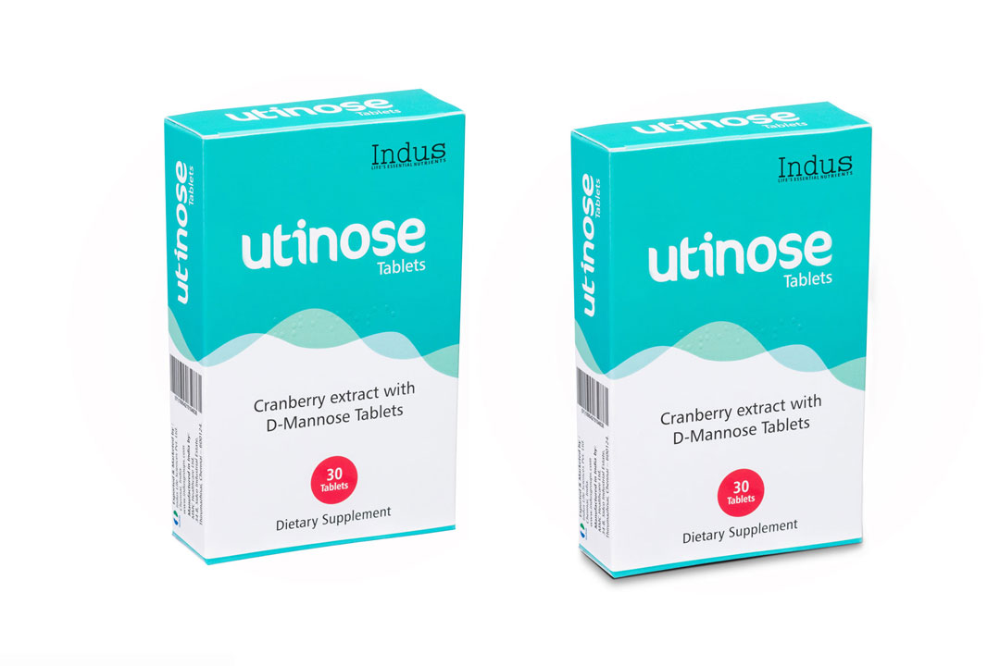
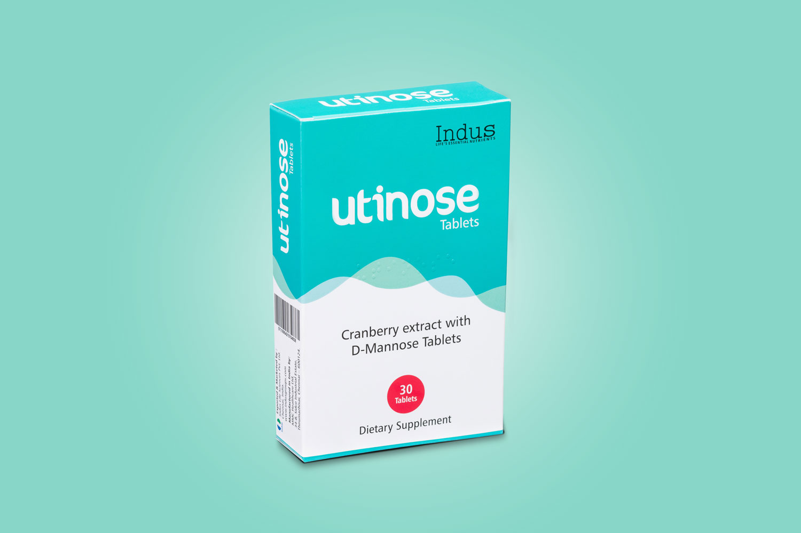
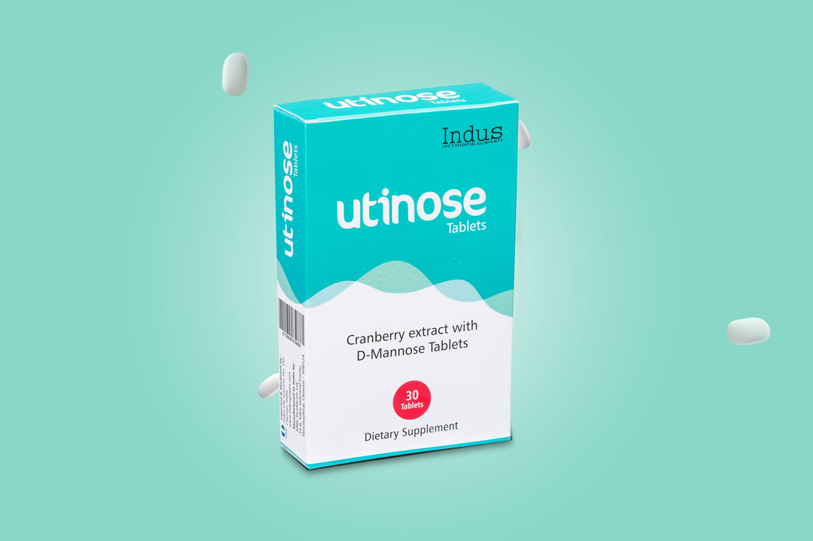
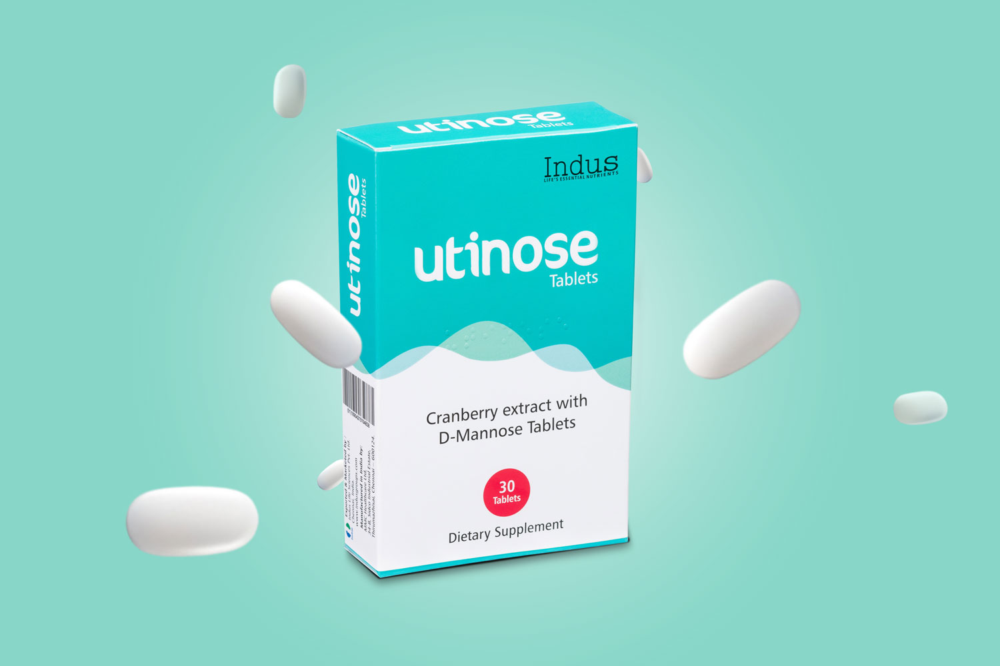
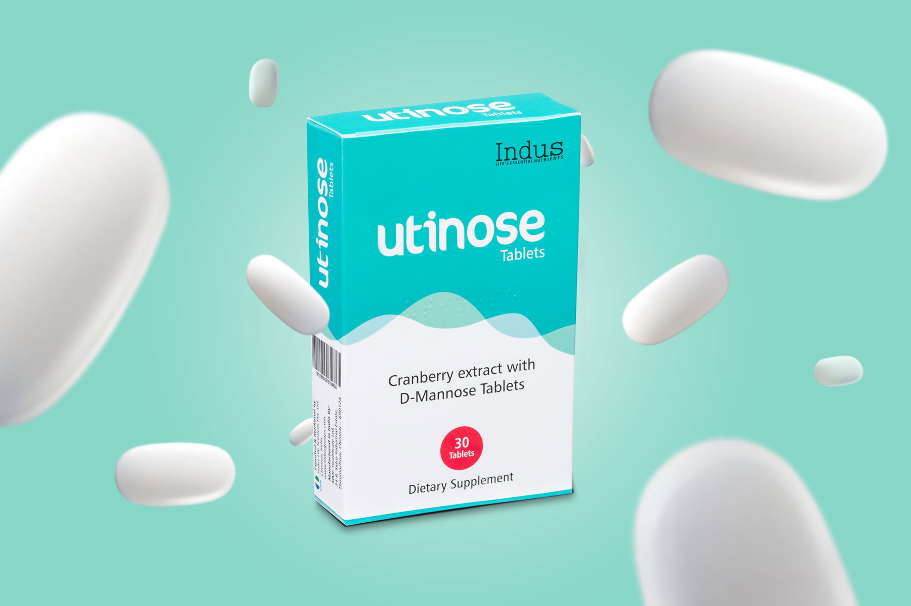

What makes great product photography in Chennai? As a commercial photographer based in Tamil Nadu, I believe it’s a blend of clean lighting, careful styling, and subtle editing — all designed to help products stand out in today’s competitive digital space.
In this post, I’ll take you behind the scenes of my shoot for Utinose Tablets, a health supplement. This shoot was part of a product campaign for a healthcare brand in India, shot at my studio in Chennai. Here's how I created both the clean tabletop product shots and the more creative floating pill composition.
Lighting Setup for Product Photography
To give the packaging a crisp, even look, I used a 3-light setup:
- Front light with a softbox to bring out the branding clearly
- Side light with scrims for gentle shadows and subtle edge definition
- Overhead light with an octabox on a C-stand to control top highlights
The product was placed on a white tabletop background, and I strategically used black charts on the top, front, and sides to block excess light and reduce unwanted reflections — even though the surface was matte. This technique ensures even matte packaging doesn’t catch distracting light spills.
Post Production Workflow in Photoshop
After capturing the clean tabletop shot, I masked the product from the background using Photoshop, added a soft contact shadow to anchor it visually
And replaced the white background with a soft teal to make the overall image more appealing.
Creative Product Photography with Floating Pills
Since the product is a pill box, I took it a step further by adding visual storytelling using floating pills. Here's how I built the scene.
I photographed the pills separately from different angles and resized them to create three layers of depth. Small pills were placed behind the product
Medium-sized pills were placed just in front of the product to create a sense of distance from the background.
Finally, I added larger pills in the foreground to create dramatic depth and complete the layered look.
Final Result – Building Compelling Product photo
This project shows that even simple product packaging can be made dynamic with the right lighting, attention to materials, and creative compositing. Small technical tweaks and post-production touches can turn ordinary shots into compelling visuals that truly sell.
Want to see more product photography work? Check out my portfolio featuring commercial product shoots.